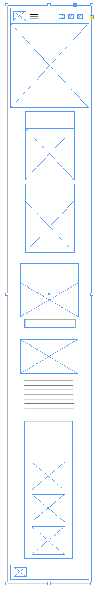

Bountiful Foods Site Plan
Laura Billman
WDD 230
Site Purpose
The purpose of this site is to provide access to fresh, organic, fruits and other produce, grown on local farms to locals and tourists visiting the Southern Coastal area. This site will specialize in offering healthy eating options, including a variety of organic fruits and specialty fruit drinks. This site will offer customized fruit drinks made to order and fruit and produce bags made fresh daily to order. Information about the company, featured coastal areas, and local weather will also be provided.
Audience
This site is for locals in the Southern California Coast area as well as visiting tourists, who are looking to purchase healthy, fresh, organic produce with convenience at a reasonable price.
Logo
Color Palette
| Primary | Secondary | Accent 1 | Accent 2 | Accent 3 |
|---|---|---|---|---|
| #7FD6CF | #FFA500 | #82C665 | #FFFFFF | #000000 |
Site Map
Customize Fruit Drink
Order Drink
Contact Information
Location Map
Typography
Heading Font: Monda
This font will be used on the header, h1, h2, and h3, headlines of each page.
Paragraph Font: Pontano Sans
This font will be used on all primary and footer navigation and paragraph text (p) elements on each page of the website.
Homepage Wireframes
Small
Medium